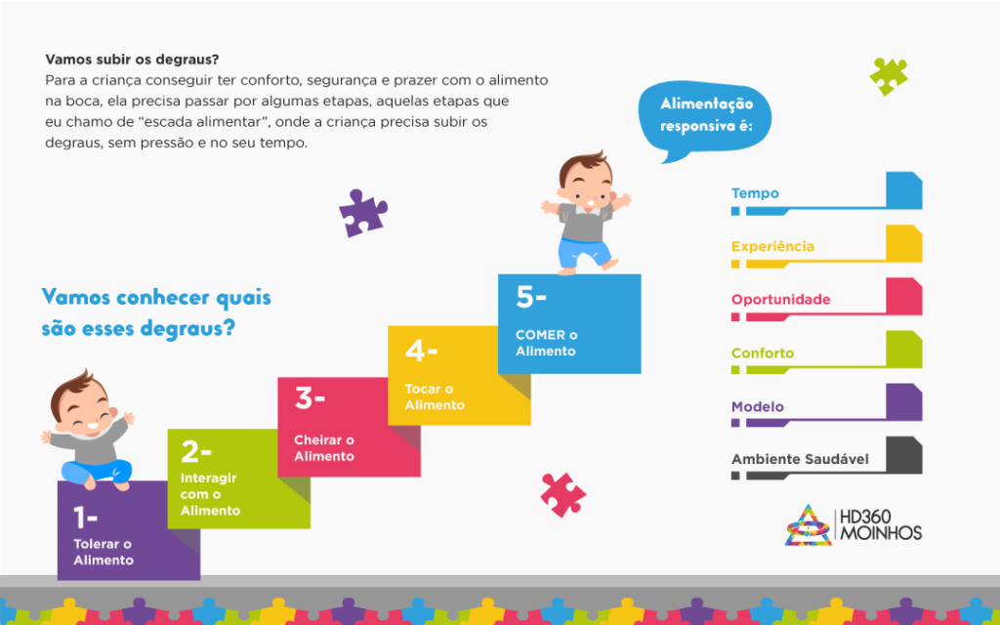

Dia a Dia da Família
Dia a Dia da Família
26 de setembro de 2023

Distúrbios Alimentares Pediátricos:
São um problema clínico de alto impacto, e tem consequências extremamente negativas para a criança e a família.
Ocorrem entre 20% a 35% das crianças com desenvolvimento típico e em 80% de crianças com complicações médicas complexas (Alterações neurológicas, TEA, Síndromes, Atraso do desenvolvimento, Prematuridade, Cardiopatia).
Tem etimologia multifatorial e se não tratado, o agravo do quadro pode restringir a ingestão oral total.
O intuito deste material é ser mais um suporte, mais um meio de auxílio, para nos lembrarmos do passo a passo que será necessário para construirmos uma nova história, uma história com uma relação saudável emocionalmente com a alimentação, e assim tornar
nossas crianças comedoras felizes, com autonomia e motivação interna que serão presentes para a vida toda.
E para isso, o primeiro passo é termos em mente que os distúrbios alimentares pediátricos são coisa séria, não são birra, não são problemas de comportamento, não são culpa da criança e NÃO é culpa dos pais.
Guia Básico de Orientações para Terapia Alimentar:
Participação:
Incluir a criança nas rotinas alimentares da família, sentar-se junto a mesa com os demais familiares na hora das refeições é imprescindível.
Oportunidade:
Propiciar que a criança possa tocar e explorar os alimentos, com todos os sentidos. É importante que ela tenha segurança em olhar, tocar, cheirar e consequentemente levar a boca. Dispor os alimentos sempre em frente a criança, ao alcance de suas mãos e seus olhos, deixar que ela explore e conheça os alimentos.
Ausência de distrações:
É importante que a criança veja e explore o que está comendo, para que perceba os atos envolvidos no processo alimentar. Minimizar distrações durante as refeições, é primordial para o aprendizado alimentar, além de auxiliar a criança a não perder o interesse facilmente, fazendo com que isso reflita positivamente além dos momentos de alimentação.
Visualização:
A comida precisa ser vista, para que possa ser descoberta através das suas cores, texturas, formas e cheiros. Incluir um prato com divisória na alimentação auxiliará na visualização dos alimentos. Não “esconda” a comida, deixe que ela seja vista e lembrem-se: Uma aparência bonita e divertida é um excelente aliado no despertar de interesse.
Diversificação da forma de oferta:
Oferecer o mesmo alimento, variando a forma de preparação, apresentação e textura. Ex: Oferecer a batata em todas as suas formas, batata frita, em purê, batata cozida em rodelas, em palito, com acréscimo de algum tempero para chamar atenção, em formato de estrela, animais, etc…
Momento da alimentação:
A hora da alimentação deve ser um momento de aprendizado e amor. Portanto conversem entre si e não façam da criança o centro da refeição. Ela deve sentir-se inserida neste momento sem ser o centro dele, então interajam normalmente, sem a pressão de ter que ficar a alimentação toda ao redor da criança, monitorando e pressionando.
Respeitar os sinais:
Jamais forcem a criança a comer. Prestem atenção nos sinais e os respeite. São exemplos de sinais que indicam que o momento e/ou alimento não o deixa confortável: Cerrar os lábios, apresentar náuseas, choro, irritabilidade ou qualquer sinal de fuga do alimento e/ou ambiente. Portanto, não force a alimentação, isto apenas dará reforços negativos e atrapalhará o processo de aprendizado alimentar, além de intensificar a aversão e recusa. Estamos construindo uma nova relação da criança com a boca e com a alimentação, e para isso é fundamental que ela possa interagir com os alimentos sem ter a pressão de comer. Só assim a criança poderá estabelecer uma relação de conforto, de prazer, de segurança com o ambiente, com os adultos e com os alimentos!
Divisão de responsabilidades na hora da refeição.
Todo mundo tem sua função quando se trata de alimentação.
OS ADULTOS DECIDEM:
Quando vamos comer;
Onde vamos comer;
Quais alimentos oferecer;
AS CRIANÇAS DECIDEM:
Quando irão comer;
Se vão comer;
O que irão comer (entre os alimentos oferecidos pelo adulto)
Apresentação de alimentos novos, menos é mais!
Ofereça pequenas porções e pequenos pedaços dos alimentos novos, diferentes, menos preferidas no prato. Isso acarretará em menos desperdício, mais exposição, maior confiança e oportunidades de descobrir e aprender.
Estabeleça horários:
Uma rotina alimentar é essencial. A criança não vai “morrer” de fome esperando a próxima refeição. Mas se ela passar o dia comendo “qualquer coisa” ela nunca vai comer de verdade. A criança precisa entender quais alimentos fazem parte de cada refeição e estabelecendo horários, nós iremos ajudar a criança a entender isso.
Estabelecer horários para as refeições não vai fazer a criança “morrer” de fome.
Agora, deixar a criança comer e beliscar o tempo todo, vai “matar” a fome da criança, e ela não vai aceitar as refeições principais.
Confie na capacidade inata do seu filho se auto-regular:
Permita que a criança seja autônoma e interaja com a comida, que faça bagunça! A exploração descontraída e divertida com os alimentos ajudará a criança a criar associações positivas e memórias afetivas. É preciso que a criança seja a companhia na hora das refeições e não o alvo! É preciso se sentir confortável e seguro com o aspecto visual dos alimentos, com o cheiro, com o toque! E acredite, isso não é fácil! Comer é multissensorial.
Inclua a criança no preparo dos alimentos.
Criem momentos diveridos ao manipular juntos os alimentos. Brincar com a comida e se sujar também faz parte do processo alimentar.
Vamos construir memórias juntos?
Na terapia de alimentação responsiva a pressão para que a criança coma volume é substituída por memórias e experiências positivas que vão sendo construídas pelo prazer, conforto, diversão, autonomia, exploração, aprendizado, respeito, trocas…
Construir memórias
As memórias construídas a partir das experiências positivas da criança e da família no momento da refeição são os elementos mais importantes durante qualquer etapa desse aprendizado.
E o momento da refeição?
As refeições precisam ser divertidas, relaxantes e um momento para a família desfrutar a companhia uns dos outros.
Objetivo
Tanto na introdução alimentar como na terapia da criança com dificuldade alimentar o maior objetivo é a relação que a criança e a família constroem com todo esse contexto!
Alimentação responsiva.
Nutrição é muito mais que nutrir o corpo biológico!
O relacionamento que se estabelece com a comida sempre será o elemento mais importante em qualquer etapa do desenvolvimento ou da terapia.
Comer vai muito além da boca e do estômago.
Nutrição jamais pode ser dissociado do prazer, do prazer das descobertas, do brincar, do manipular, do descobrir e do compartilhar.
Comer é um aprendizado e uma tarefa que envolve todos os sentidos.
Você colocaria na boca um alimento que você nem sequer consegue olhar?
E sabe porque você dificilmente conseguiria? Porque comer é uma tarefa multissensorial.
Vamos subir os degraus?
Para a criança conseguir ter conforto, segurança e prazer com o alimento na boca, ela precisa passar por algumas etapas, aquelas etapas que eu chamo de “escada alimentar”, onde a criança precisa subir os degraus, sem pressão e no seu tempo.

Qual a importância de interagir com os alimentos?
Ao interagir com os alimentos sem ter a pressão de comer a criança estabelece uma relação de conforto, de prazer, de segurança com o ambiente, com os adultos e com os alimentos
Alimentação responsiva
Nessa abordagem terapêutica a pressão do comer, provar e engolir, são substituídos pela alegria de compartilhar momentos, pelo preço da companhia, das risadas e memórias afetivas que vão sendo construídas a partir de então!
Terapia
Nesta Terapia cada etapa é muito importante, a relação da criança com o alimento, o tolerar, interagir, cheirar e tocar, são etapas fundamentais e tão importantes como o provar e comer!
Redescobrir a alimentação
A pressão do volume, da quantidade é substituída pela relação afetuosa que é construída com tudo que envolve a alimentação.
Os Pais na terapia alimentar
Na abordagem de terapia responsiva, os pais não são auxiliares do terapeuta de alimentação, eles são o eixo, a base fundamental para que essa ressignificação possa acontecer e por isso o lugar deles é na mesa, ao lado dos seus filhos explorando, interagindo, cheirando, tocando, fazendo bagunça, construindo refeições deliciosas e felizes memórias!
Palavras como forma de pressão
Frases como experimente, é bom, só uma mordida, apesar de serem bem intencionadas, elas não ajudam, pois são uma forma de pressão.
Promova a auto regulação
Ajustes suas expectativas a realidade do seu filho. Não podemos apressar, pular etapas. Promova a auto regulação, troque frases como “parabéns, você comeu tudo!” por “olha, comeu tudo! Estava com fome? Estava Gostoso?”
Abrace cada conquista
Abrace cada conquista, abrace essa jornada, que pode ser longa, mas que no final com certeza valerá muito a pena.
Redescobrir a alimentação
Tenha em mente que seu filho está construindo a relação com a alimentação e se ela será feliz e saudável no futuro, depende das nossas ações HOJE, e por isso em vez de contar o número de mordidas ou colheradas vamos contar o número de sorrisos a cada nova interação com a comida?
Procure sempre um profi ssional especializado.
Elaboração:
Vânia Carolina Devitte Ruiz, 2020
Fontes:
Diniz. PB 2019, Diniz.PB 2020,
Padovani.Aline 2020, Brazelton TB, Sparrow JD, 2005, Ramsay.M 2013, Berlin.KS 2009, Estrem.HH 2017, Krom HWinter, JP
Kindermann 2017, Marsha Dunn Klein 2019.
Toomey K 2002, Toomey K 2011, Lefton-Grei MA 2008, Dodrill P.Gosa MM 2015. Thoyre, SM et al 2018, Morris SE Klein, MD 2000, Black, MM, Hurley, KM 2017.
Leia também